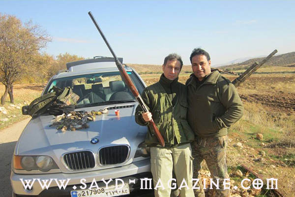
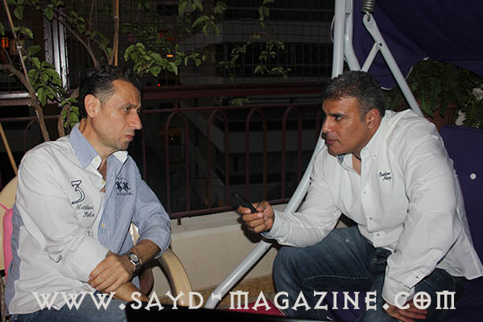
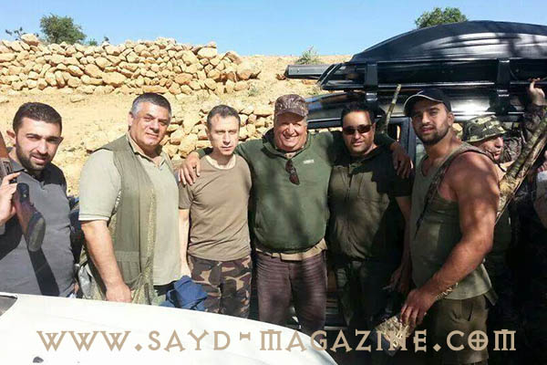
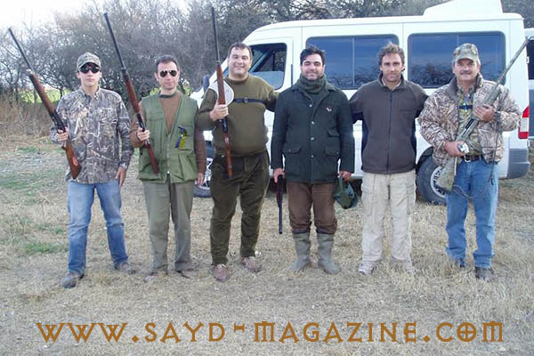
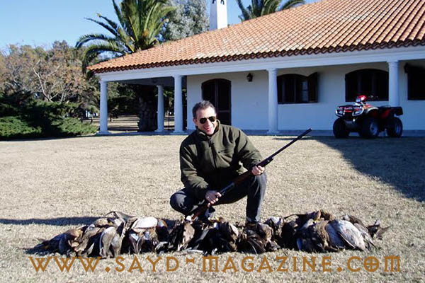

لم يستطع إبن قرية "حمانا" في جبل لبنان، معالي الوزير السابق عبدالله فرحات، أن يخفي أو يحد أو يخفف من نبض شغفه وهو يحدثنا عن عالم الصيد الذي خبره منذ صغره على يد والده الصياد، وأدخله الى عالم الطبيعة التي أحبها بعشق كبير. بل راح يعرض صور صيده أفلاما وصورا وكأن لكل صورة قصة ولكل رحلة حدث.فهو المتعلق بهذه الهواية منذ كان إبن 6 سنوات، حين كان سلاح صيده "خردقة " وكانت هوايته حلم.
لم يستطع إبن قرية "حمانا" في جبل لبنان، معالي الوزير السابق عبدالله فرحات، أن يخفي أو يحد أو يخفف من نبض شغفه وهو يحدثنا عن عالم الصيد الذي خبره منذ صغره على يد والده الصياد، وأدخله الى عالم الطبيعة التي أحبها بعشق كبير. بل راح يعرض صور صيده أفلاما وصورا وكأن لكل صورة قصة ولكل رحلة حدث.فهو المتعلق بهذه الهواية منذ كان إبن 6 سنوات، حين كان سلاح صيده "خردقة " وكانت هوايته حلم.

بصراحة هل تعتبر الصيد كثافة قنص طرائد أو ماذا ؟ انا أحب قنص الطرائد وكل صياد يحب قنص الطرائد وممارسة مهارته في ذلك، الا أن الرحلة بالنسبة لي هي الأساس لأنني أحب تفاصيل حياة الصيد من الإستيقاظ المبكر الى القيادة نحو المقوص الى الترويقة " سحلب" او لبنة بلدية، واللقاء مع الصيادين، والعيش بحرية في الطبيعة خلال هذا الوقت. لديك صور صيد في لبنان وخارجه، ما الفرق بين الصيد هنا والصيد هناك؟ في لبنان أصبح الصيد محدودا بسبب كثرة الصيد الجائر الذي أدى الى نقص كبير في إعداد الطيور، كما إن هنا يوجد الكثير من الذين لا معرفة لهم في الصيد ولا يجيدون إستخدام السلاح. أما في الخارج فالصيد منظم ويوجد أعداد كبيرة جدا من الطرائد، كما إن هناك طقوسا خاصة للصيد وتفاصيل مذهلة جدا،خصوصا في إنكلترا،حيث يجتمع الصيادون في قصر وينطلقون منه الى المقوص في اليوم التالي بعد عشاء فاخر وخدمة ملوكية، وكل فرد فيهم يرتدي لباس الصيد من صنع "هولاند اند هولاند" الذي ورثه عن جده أو أبيه دلالة على قدمه في عالم الصيد وخبرته العتيقة. كما ويوجد عندهم متخصص في الكتف والرجل لإختيار كتف البندقية المناسبة والجزمة لكل صياد.وفي الصيد يقومون بالمراهنات على الأعداد التي سيصطادونها والتي تكون من ضمن القانون..الخ في أي رحلة عشت مغامرة تستحق الذكر؟ في رحلة صيد الى الأرجنتين شعرت إنني في برّية حقيقية وقاسية، حيث تركنا القارب أنا وصديقييّ في قلب مستنقع موحل رائحته غير مستحبة، والماء البارد يغمرني الى ما فوق الخصر، وبقيت أكثر من نصف ساعة أرفع بندقيتي كي لا تبتل بالماء، حتى حان موعد قدوم البط فقنصت الكثير منه ونسيت كل الإنتظار المرير والبرد القارس. وكانت هذه الرحلة من أمتع الرحلات واكثرهن صعوبة.
قال في اللقاء - ليس لدي عتاد كبير للصيد بل إعتمد في الرحلات على عتاد صديقي الصياد خالد ابو يونس الذي يملك اسطولا من عتاد وسلاح الصيد (يضحك) - أول طائر قنصته بشكل " حرام " هو حمامة جوية لجارنا، وذلك من مسافة 5 امتار ببندقية 9 ملم، فنهرني والدي وأخبرني ان الحمام الجوي " ما بيتصديوه ". - أحب كثيرا عصفور التين " التيان"، وأحب صيد المطوق لأنه يأتي بكمّيات كبيرة. - صيد " السمّن" يحتاج الى الكثير من السرعة والصبر والحنكة. ومن الإجرام والضعف قنصه على الأشجار المضاءة في الليل. - إختبرت صيد الأرانب مع الصديق الصياد خالد بو يونس وهو ماهر جدا وسريع في الرماية. - لا اشعر " بالزعل" إذا لم اقنص أعدادا كبيرة، فأنا احب الرحلة ورفقة الصيد،وأحب الطبيعة ورائحة أول الشتاء والعلاقة الطريفة بين الصيادين. - زوجتي لا تحب الصيد، وأعتقد ان الكثير من النساء مثلها. فالمرأة تريد أن تكون محط إهتمام أينما تحل وهذا غير متوفر لها في المقوص (يضحك) . - المناطق المزدحمة بالصيادين تفقدني متعة الصيد، وتشعرني إنني في قلب الخطر بسبب الكثيرين الذين لا يجيدون إستعمال السلاح. - وفي صيد الخنازير البرية يجب إن يكون عدد الصيادين قليلا تجنبا للخطر. - في الأرجنيتن رأيت إمرأة تصطاد غزالا على بعد مسافة 700 متر وكانت إصابتها مذهلة " وما إسترجينا نقرب عليها " (يضحك) - بصراحة لا أحب ان تجيد المرأة الرماية أفضل مني ( يضحك ) - لست ( شاطر ) في رماية الصحون بالتيرو، إنما في قنص الحمام، ولا أحب الصيد البحري لأنه يحتاج الى صبر طويل جدا. - الصيد رياضة خطرة وأنا مع إجراء إمتحان الصيد للجميع،لأنه من الضروري أن نتعرف على القانون الجديد، وسأكون من أوائل الذين يجرون الإمتحان حين يعلن عن إنطلاقه. - رمي الخرطوش في الطبيعة هو ضرر كبير للبيئة. - الصيد الغير واعي يقضي على المخزون الطبيعي من الطيور. -شاهدت الرئيس شمعون " عم يقوص" حمام في تيرو الضبية،وكان عمره حينها حوالي87 سنة، وهو من الأشخاص الذين تمنيت أن أصطاد معهم في حياتي. -كدت أصطاد رأس صديقي في رومانيا وأنا أتحضّر لقنص أرنب يركض بطريقة التسديد أمامه، ولكن العناية الإلهية حالت دون ذلك، لقد تجمد الدم في جسمي في تلك اللحظة. -لا أحب المشي في الصيد مع صديقي أندريه بشارة لأن خطوته حوالي الـ 3 أمتار، وأشعر ان عليّ الركض بجانبه، وهذه معاناة في الصيد . (يضحك)


